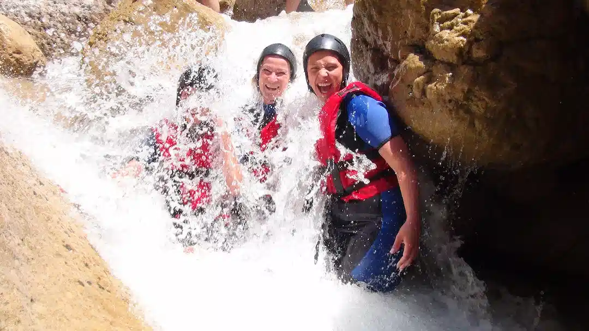

About Us | Rapidds Rafting
Our purpose is to create unforgettable river adventures that bring people closer to the wild beauty of the canyonlands, journeys filled with excitement, connection, and discovery. Every trip is guided by our commitment to safety, our responsibility of stewardship for the river and its environment, and the pure stoke that comes from paddling together through the rapids, sharing laughter, and building memories that last a lifetime.
History
Founded by local guides born and raised for the Green River rapids, we grew from one raft to a community-driven outfitter. What started as weekend runs for friends and neighbors turned into a small garage operation, then a full fleet as word spread that our trips felt like rafting with family. We learned every bend and eddy the hard way—early mornings, late take-outs, and a commitment to safety that's now baked into how we train every guide. As Moab blossomed, we stayed rooted: partnering with local schools and businesses, volunteering for river clean-ups, and mentoring new boaters each spring. Today our boats carry first-timers, multi-day adventurers, and returning guests who bring their kids back to meet the same guides they trusted years ago. Through high water and low, our mission hasn't changed: run fun, responsible trips, take care of our rivers, and treat every guest like a longtime friend.
Our team is passionate about sharing the thrill of whitewater with new friends and old, always putting safety and fun first. Every trip is an opportunity to spark laughter, build memories, and inspire a deeper respect for the river. From teaching first-timers how to paddle through their first rapid to guiding seasoned adventurers down challenging stretches, we bring the same energy and care to every ride. Our guides are not only trained professionals, but also storytellers and stewards of the canyon, pointing out hidden petroglyphs, wildlife along the banks, and the unique geology that makes Moab so unforgettable. Above all, we believe that adventure and safety go hand in hand, and that the best days on the water are the ones where everyone leaves with soaked clothes, tired arms, and a huge smile.
Adventures